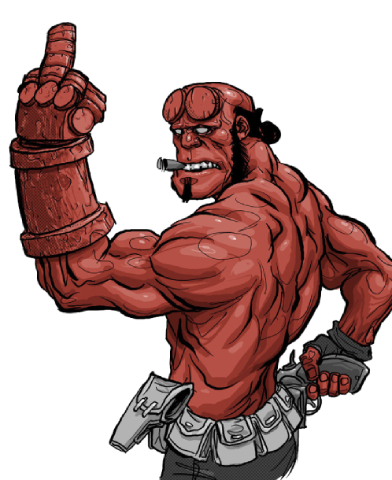

Anung un Rama
"Hellboy"

Player Details
Biography
Hellboy is born in the underworld but summoned to Earth in the final months of World War II by the "Mad Monk" Grigori Rasputin on Tarmagant Island, off the coast of Scotland, having been commissioned by the Nazis to change the tide of a losing war. As a direct result of this ritual, the child appears on Earth in a fireball at what remains of the ruined Bromwich Church on December 23, 1944. Proving not to be a devil, in the traditional sense, but a devil-like creature, the child was dubbed "Hellboy" by Professor Trevor "Broom" Bruttenholm.
Taken by the United States Armed Forces to an Air Force base in New Mexico, Hellboy is raised by Professor Bruttenholm and the United States Army where the Bureau for Paranormal Research and Defense (BPRD), a private organization dedicated to combating occult threats, begins. Due to the success of his first mission in 1952, Hellboy is granted "honorary human" status by the United Nations and becomes a member of the BPRD as the "world's greatest paranormal investigator". As such, Hellboy interacts regularly with humans, primarily law enforcement officials, the military, and various "scholars of the weird", most of whom are not presented as overtly reacting to his strange appearance.
Place of birth
East Bromwich, UK
Date of birth
October 5, 1617
Abilities
- Superhuman strength and endurance
- Accelerated healing
- Longevity
- Extensive knowledge of the supernatural
- Right Hand of Doom (which serves as the key to the End of the World)
- Innate capability to comprehend magical languages
- Immunity to fire and lightning
Weaknesses